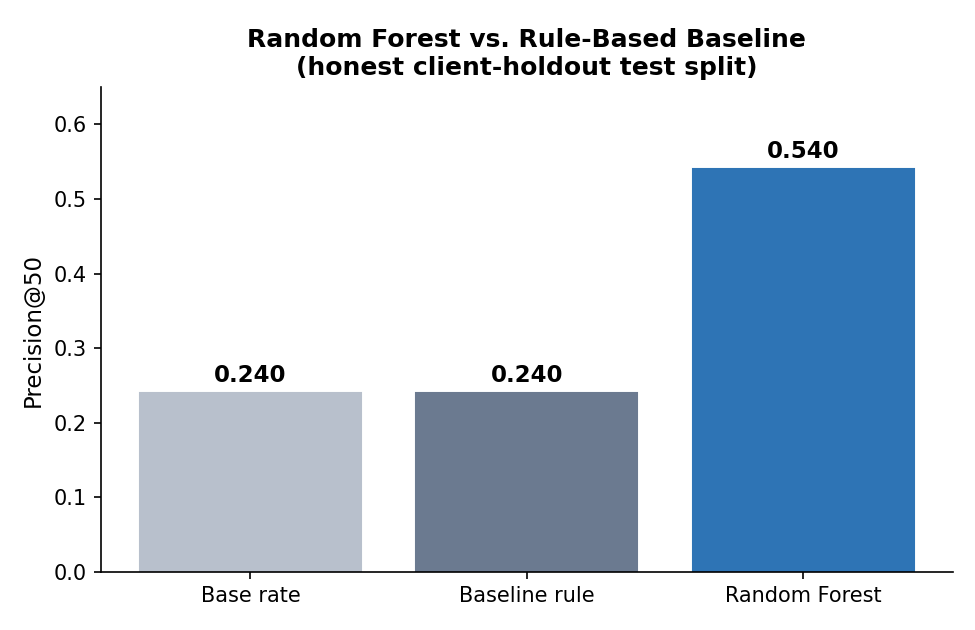
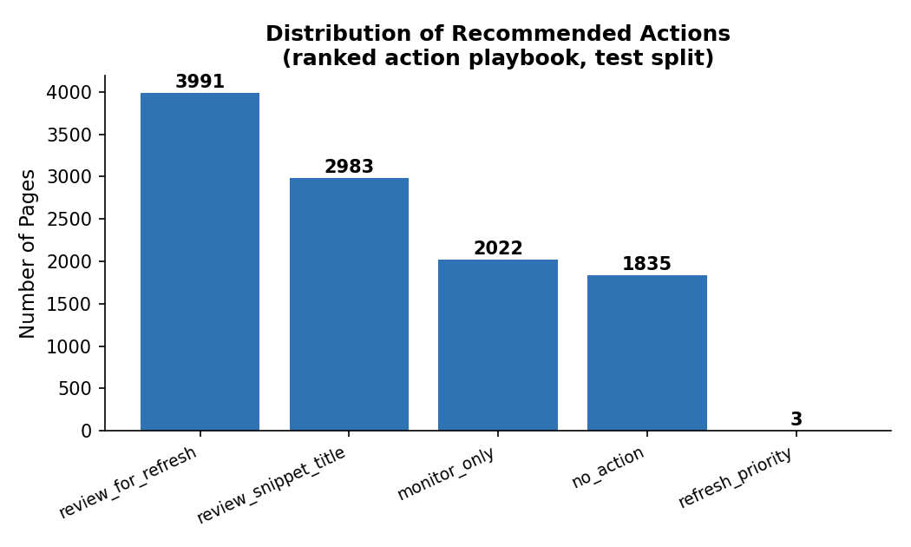

01 Introduction
An editorial team with a large content library rarely has time to review every page. The real decision is narrower and more urgent: which handful of pages should get attention this week?
Reviewing the wrong pages wastes scarce editor time. Missing the right ones lets a real decline compound quietly until it is expensive to reverse. A simple hand-written rule — "flag anything stale and still visible" — is transparent and easy to trust, but it is also blunt: it cannot weigh multiple weak signals together the way a learned model can.
This paper builds that learned model, but treats the hand-written rule as the number to beat rather than a strawman — every claim below is checked against it on the exact same data and metric.
02 Data
Two data sources were used, at two different stages of the project:
- Starter sample — 30,000 anonymized content pages across 32 clients, trailing 90-day search and engagement metrics, used for iteration and the results reported below.
- Production warehouse — FlyRank's Hugging Face–hosted data warehouse
(
fact_content_daily_performance, ~79M rows). A mid-panel month (month=2026-03) was queried directly with DuckDB for the data-contract stage: 9.84M rows across 55 clients and 331,437 content items.
| Field | Value |
|---|---|
| Unit of analysis | One content page, one client, one trailing-90-day window |
| Time window | Trailing 90 days (starter sample); month=2026-03 (warehouse contract) |
| Label | is_declining_label = trend_direction == "down" (current-window proxy) |
| Excluded | Raw URLs, queries, client names; FlyRank product-decision fields (health_score, priority_score); the sealed final month (2026-06) |
03 Methodology
Baseline: a rule a human can read
A page is flagged if it has gone 180+ days without an update and still
receives 500+ impressions in the trailing 90 days — stale, but still visible enough
to matter. Each flagged page is scored by its impression volume and carries the reason code
stale_but_visible.
Model: Random Forest, chosen to fit the question
Because the real question is "which pages first" — a ranking problem, not a plain yes/no classification — every model's output is used as a ranking score and evaluated with Precision@K rather than accuracy. Random Forest was chosen over a single rule or a linear model because it captures interacting, non-linear signals (visibility × freshness × position × engagement) that a hand-written rule cannot combine.
Validation: client-holdout, not random
Multiple pages belong to the same client. A random row split would let the model see other pages from a client during training and get tested on that same client's remaining pages — memorizing client-specific quirks rather than learning transferable signal. Every result below uses a grouped split by client_id (30% of clients held out entirely), so the model is genuinely tested on clients it has never seen.
Leakage checks
trend_direction and trend_pct — the columns the label is derived
from — were excluded from every feature set. As a deliberate test of the validation harness
itself, one label-derived column was intentionally added back in: the score jumped to a
near-perfect 1.000, confirming the harness correctly detects leakage when it is
present. That column was then removed and only the honest number was kept.
04 Results
The table below reports every method on the identical client-holdout test split, with the base rate shown for context — a score means little until you know what random guessing would give you.
| Method | Precision@50 | ROC-AUC |
|---|---|---|
| Base rate (random ranking) | ≈0.240 | — |
| Baseline rule (stale + visible) | 0.240 | — |
| Random Forest (honest split) | 0.540 | 0.603 |

Reading the errors, not just the score
The model's top three features by importance are days since last update, impressions (90d), and average position — the same signals already verified as linked to decline risk during the Week 4 signal audit, not a suspicious, unexplained top feature. Manual review of the top 50 ranked pages found the model's most common error: pages with high impressions and long time-since-update that were ranked highly, but had actually plateaued rather than declined — a distinction the current features cannot fully capture.
05 Limitations & Honest Framing
- Proxy label:
is_declining_labelreflects the current window, not a validated future outcome. A stronger future version would predict a decline measured in a window strictly after the feature window. - Survivor filter: the sample only includes active pages (impressions_90d > 0, age ≥ 90 days) — very new or fully invisible pages are not represented at all.
- Sample scope: results reflect one 30,000-row anonymized slice, not FlyRank's full client base; the production-scale warehouse was used only for the data-contract verification stage, not for the model reported here.
- Consolidation and seasonality: a "decline" flag can still be a sibling page absorbing traffic, or ordinary seasonal demand — neither is ruled out by this model alone.
06 Ranked Recommendations
The model's output is packaged as a reviewable action queue, not an automated pipeline:
- Refresh priority — stale (180+ days) and still visible (500+ impressions) pages. Why: matches the paper's own verified staleness-visibility signal; largest expected recovery per review.
- Review snippet / title — page-1 pages with weak click-through for their position. Why: page-one refinement converts to clicks faster than rebuilding low-visibility pages.
- Review for refresh — pages the model scores ≥0.65 for decline risk. Why: highest model-estimated risk not already covered by the rule above.
- Monitor only — low-visibility pages with no current flag. Why: too little signal yet to justify editor time; re-check next cycle.

07 Reproducibility
Every step above is executable and versioned. Random seed 42 is fixed throughout.
- Full repository: github.com/abdullahawan0043-glitch/Flyrank-machine-learning-internship
- Capstone notebook:
work/notebooks/capstone.ipynb - Baseline (Week 4):
work/notebooks/w04_baseline_score.ipynb - Model (Week 5):
work/notebooks/w05_model.ipynb - Validation audit (Week 6):
work/notebooks/w06_validation_audit.ipynb - Action playbook (Week 7):
work/notebooks/w07_action_playbook.ipynb